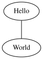
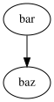

Warning
In caso di dubbi sulla correttezza del contenuto di questa traduzione, l’unico riferimento valido è la documentazione ufficiale in inglese. Per maggiori informazioni consultate le avvertenze.
Note
Per leggere la documentazione originale in inglese: Documentation/doc-guide/index.rst
Usare Sphinx per la documentazione del kernel¶
Il kernel Linux usa Sphinx per la generazione della documentazione a partire
dai file reStructuredText che si trovano nella cartella Documentation.
Per generare la documentazione in HTML o PDF, usate comandi make htmldocs o
make pdfdocs. La documentazione così generata sarà disponibile nella
cartella Documentation/output.
I file reStructuredText possono contenere delle direttive che permettono di includere i commenti di documentazione, o di tipo kernel-doc, dai file sorgenti. Solitamente questi commenti sono utilizzati per descrivere le funzioni, i tipi e l’architettura del codice. I commenti di tipo kernel-doc hanno una struttura e formato speciale, ma a parte questo vengono processati come reStructuredText.
Inoltre, ci sono migliaia di altri documenti in formato testo sparsi nella
cartella Documentation. Alcuni di questi verranno probabilmente convertiti,
nel tempo, in formato reStructuredText, ma la maggior parte di questi rimarranno
in formato testo.
Installazione Sphinx¶
I marcatori ReST utilizzati nei file in Documentation/ sono pensati per essere
processati da Sphinx nella versione 1.7 o superiore.
Esiste uno script che verifica i requisiti Sphinx. Per ulteriori dettagli consultate Verificare le dipendenze Sphinx.
La maggior parte delle distribuzioni Linux forniscono Sphinx, ma l’insieme dei programmi e librerie è fragile e non è raro che dopo un aggiornamento di Sphinx, o qualche altro pacchetto Python, la documentazione non venga più generata correttamente.
Un modo per evitare questo genere di problemi è quello di utilizzare una
versione diversa da quella fornita dalla vostra distribuzione. Per fare questo,
vi raccomandiamo di installare Sphinx dentro ad un ambiente virtuale usando
virtualenv-3 o virtualenv a seconda di come Python 3 è stato
pacchettizzato dalla vostra distribuzione.
Note
Viene raccomandato l’uso del tema RTD per la documentazione in HTML. A seconda della versione di Sphinx, potrebbe essere necessaria l’installazione tramite il comando
pip install sphinx_rtd_theme.Alcune pagine ReST contengono delle formule matematiche. A causa del modo in cui Sphinx funziona, queste espressioni sono scritte utilizzando LaTeX. Per una corretta interpretazione, è necessario aver installato texlive con i pacchetti amdfonts e amsmath.
Riassumendo, se volete installare la versione 2.4.4 di Sphinx dovete eseguire:
$ virtualenv sphinx_2.4.4
$ . sphinx_2.4.4/bin/activate
(sphinx_2.4.4) $ pip install -r Documentation/sphinx/requirements.txt
Dopo aver eseguito . sphinx_2.4.4/bin/activate, il prompt cambierà per
indicare che state usando il nuovo ambiente. Se aprite un nuova sessione,
prima di generare la documentazione, dovrete rieseguire questo comando per
rientrare nell’ambiente virtuale.
Generazione d’immagini¶
Il meccanismo che genera la documentazione del kernel contiene un’estensione capace di gestire immagini in formato Graphviz e SVG (per maggior informazioni vedere Figure ed immagini).
Per far si che questo funzioni, dovete installare entrambe i pacchetti Graphviz e ImageMagick. Il sistema di generazione della documentazione è in grado di procedere anche se questi pacchetti non sono installati, ma il risultato, ovviamente, non includerà le immagini.
Generazione in PDF e LaTeX¶
Al momento, la generazione di questi documenti è supportata solo dalle versioni di Sphinx superiori alla 2.4.
Per la generazione di PDF e LaTeX, avrete bisogno anche del pacchetto
XeLaTeX nella versione 3.14159265
Per alcune distribuzioni Linux potrebbe essere necessario installare
anche una serie di pacchetti texlive in modo da fornire il supporto
minimo per il funzionamento di XeLaTeX.
Verificare le dipendenze Sphinx¶
Esiste uno script che permette di verificare automaticamente le dipendenze di Sphinx. Se lo script riesce a riconoscere la vostra distribuzione, allora sarà in grado di darvi dei suggerimenti su come procedere per completare l’installazione:
$ ./scripts/sphinx-pre-install
Checking if the needed tools for Fedora release 26 (Twenty Six) are available
Warning: better to also install "texlive-luatex85".
You should run:
sudo dnf install -y texlive-luatex85
/usr/bin/virtualenv sphinx_2.4.4
. sphinx_2.4.4/bin/activate
pip install -r Documentation/sphinx/requirements.txt
Can't build as 1 mandatory dependency is missing at ./scripts/sphinx-pre-install line 468.
L’impostazione predefinita prevede il controllo dei requisiti per la generazione di documenti html e PDF, includendo anche il supporto per le immagini, le espressioni matematiche e LaTeX; inoltre, presume che venga utilizzato un ambiente virtuale per Python. I requisiti per generare i documenti html sono considerati obbligatori, gli altri sono opzionali.
Questo script ha i seguenti parametri:
--no-pdfDisabilita i controlli per la generazione di PDF;
--no-virtualenvUtilizza l’ambiente predefinito dal sistema operativo invece che l’ambiente virtuale per Python;
Generazione della documentazione Sphinx¶
Per generare la documentazione in formato HTML o PDF si eseguono i rispettivi
comandi make htmldocs o make pdfdocs. Esistono anche altri formati
in cui è possibile generare la documentazione; per maggiori informazioni
potere eseguire il comando make help.
La documentazione così generata sarà disponibile nella sottocartella
Documentation/output.
Ovviamente, per generare la documentazione, Sphinx (sphinx-build)
dev’essere installato. Se disponibile, il tema Read the Docs per Sphinx
verrà utilizzato per ottenere una documentazione HTML più gradevole.
Per la documentazione in formato PDF, invece, avrete bisogno di XeLaTeX`
e di ``convert(1) disponibile in ImageMagick
(https://www.imagemagick.org). [1]
Tipicamente, tutti questi pacchetti sono disponibili e pacchettizzati nelle
distribuzioni Linux.
Per poter passare ulteriori opzioni a Sphinx potete utilizzare la variabile
make SPHINXOPTS. Per esempio, se volete che Sphinx sia più verboso durante
la generazione potete usare il seguente comando make SPHINXOPTS=-v htmldocs.
Potete anche personalizzare l’ouptut html passando un livello aggiuntivo
DOCS_CSS usando la rispettiva variabile d’ambiente DOCS_CSS.
La variable make SPHINXDIRS è utile quando si vuole generare solo una parte
della documentazione. Per esempio, si possono generare solo di documenti in
Documentation/doc-guide eseguendo make SPHINXDIRS=doc-guide htmldocs. La
sezione dedicata alla documentazione di make help vi mostrerà quali sotto
cartelle potete specificare.
Potete eliminare la documentazione generata tramite il comando
make cleandocs.
Scrivere la documentazione¶
Aggiungere nuova documentazione è semplice:
aggiungete un file
.rstnella sottocartellaDocumentationaggiungete un riferimento ad esso nell’indice (TOC tree) in
Documentation/index.rst.
Questo, di solito, è sufficiente per la documentazione più semplice (come
quella che state leggendo ora), ma per una documentazione più elaborata è
consigliato creare una sottocartella dedicata (o, quando possibile, utilizzarne
una già esistente). Per esempio, il sottosistema grafico è documentato nella
sottocartella Documentation/gpu; questa documentazione è divisa in
diversi file .rst ed un indice index.rst (con un toctree
dedicato) a cui si fa riferimento nell’indice principale.
Consultate la documentazione di Sphinx e reStructuredText per maggiori informazione circa le loro potenzialità. In particolare, il manuale introduttivo a reStructuredText di Sphinx è un buon punto da cui cominciare. Esistono, inoltre, anche alcuni costruttori specifici per Sphinx.
Guide linea per la documentazione del kernel¶
In questa sezione troverete alcune linee guida specifiche per la documentazione del kernel:
Non esagerate con i costrutti di reStructuredText. Mantenete la documentazione semplice. La maggior parte della documentazione dovrebbe essere testo semplice con una strutturazione minima che permetta la conversione in diversi formati.
Mantenete la strutturazione il più fedele possibile all’originale quando convertite un documento in formato reStructuredText.
Aggiornate i contenuti quando convertite della documentazione, non limitatevi solo alla formattazione.
Mantenete la decorazione dei livelli di intestazione come segue:
=con una linea superiore per il titolo del documento:====== Titolo ======
=per i capitoli:Capitoli ========
-per le sezioni:Sezioni -------
~per le sottosezioni:Sottosezioni ~~~~~~~~~~~~
Sebbene RST non forzi alcun ordine specifico (Piuttosto che imporre un numero ed un ordine fisso di decorazioni, l’ordine utilizzato sarà quello incontrato), avere uniformità dei livelli principali rende più semplice la lettura dei documenti.
Per inserire blocchi di testo con caratteri a dimensione fissa (codici di esempio, casi d’uso, eccetera): utilizzate
::quando non è necessario evidenziare la sintassi, specialmente per piccoli frammenti; invece, utilizzate.. code-block:: <language>per blocchi più lunghi che beneficeranno della sintassi evidenziata. Per un breve pezzo di codice da inserire nel testo, usate ``.
Il dominio C¶
Il Dominio Sphinx C (denominato c) è adatto alla documentazione delle API C. Per esempio, un prototipo di una funzione:
.. c:function:: int ioctl( int fd, int request )
Il dominio C per kernel-doc ha delle funzionalità aggiuntive. Per esempio,
potete assegnare un nuovo nome di riferimento ad una funzione con un nome
molto comune come open o ioctl:
.. c:function:: int ioctl( int fd, int request )
:name: VIDIOC_LOG_STATUS
Il nome della funzione (per esempio ioctl) rimane nel testo ma il nome del suo
riferimento cambia da ioctl a VIDIOC_LOG_STATUS. Anche la voce
nell’indice cambia in VIDIOC_LOG_STATUS.
Notate che per una funzione non c’è bisogno di usare c:func: per generarne
i riferimenti nella documentazione. Grazie a qualche magica estensione a
Sphinx, il sistema di generazione della documentazione trasformerà
automaticamente un riferimento ad una funzione() in un riferimento
incrociato quando questa ha una voce nell’indice. Se trovate degli usi di
c:func: nella documentazione del kernel, sentitevi liberi di rimuoverli.
Tabelle a liste¶
Il formato list-table può essere utile per tutte quelle tabelle che non
possono essere facilmente scritte usando il formato ASCII-art di Sphinx. Però,
questo genere di tabelle sono illeggibili per chi legge direttamente i file di
testo. Dunque, questo formato dovrebbe essere evitato senza forti argomenti che
ne giustifichino l’uso.
La flat-table è anch’essa una lista di liste simile alle list-table
ma con delle funzionalità aggiuntive:
column-span: col ruolo
cspanuna cella può essere estesa attraverso colonne successiveraw-span: col ruolo
rspanuna cella può essere estesa attraverso righe successiveauto-span: la cella più a destra viene estesa verso destra per compensare la mancanza di celle. Con l’opzione
:fill-cells:questo comportamento può essere cambiato da auto-span ad auto-fill, il quale inserisce automaticamente celle (vuote) invece che estendere l’ultima.
opzioni:
:header-rows:[int] conta le righe di intestazione:stub-columns:[int] conta le colonne di stub:widths:[[int] [int] ... ] larghezza delle colonne:fill-cells:invece di estendere automaticamente una cella su quelle mancanti, ne crea di vuote.
ruoli:
:cspan:[int] colonne successive (morecols):rspan:[int] righe successive (morerows)
L’esempio successivo mostra come usare questo marcatore. Il primo livello della
nostra lista di liste è la riga. In una riga è possibile inserire solamente
la lista di celle che compongono la riga stessa. Fanno eccezione i commenti
( .. ) ed i collegamenti (per esempio, un riferimento a
:ref:`last row <last row>` / last row)
.. flat-table:: table title
:widths: 2 1 1 3
* - head col 1
- head col 2
- head col 3
- head col 4
* - row 1
- field 1.1
- field 1.2 with autospan
* - row 2
- field 2.1
- :rspan:`1` :cspan:`1` field 2.2 - 3.3
* .. _`it last row`:
- row 3
Che verrà rappresentata nel seguente modo:
table title¶ head col 1
head col 2
head col 3
head col 4
row 1
field 1.1
field 1.2 with autospan
row 2
field 2.1
field 2.2 - 3.3
row 3
Riferimenti incrociati¶
Aggiungere un riferimento incrociato da una pagina della
documentazione ad un’altra può essere fatto scrivendo il percorso al
file corrispondende, non serve alcuna sintassi speciale. Si possono
usare sia percorsi assoluti che relativi. Quelli assoluti iniziano con
“documentation/”. Per esempio, potete fare riferimento a questo
documento in uno dei seguenti modi (da notare che l’estensione
.rst è necessaria):
Vedere Documentation/doc-guide/sphinx.rst. Questo funziona sempre
Guardate pshinx.rst, che si trova nella stessa cartella.
Leggete ../sphinx.rst, che si trova nella cartella precedente.
Se volete che il collegamento abbia un testo diverso rispetto al
titolo del documento, allora dovrete usare la direttiva Sphinx
doc. Per esempio:
Vedere :doc:`il mio testo per il collegamento <sphinx>`.
Nella maggioranza dei casi si consiglia il primo metodo perché è più
pulito ed adatto a chi legge dai sorgenti. Se incontrare un :doc:
che non da alcun valore, sentitevi liberi di convertirlo in un
percorso al documento.
Per informazioni riguardo ai riferimenti incrociati ai commenti kernel-doc per funzioni o tipi, consultate
Figure ed immagini¶
Se volete aggiungere un’immagine, utilizzate le direttive kernel-figure
e kernel-image. Per esempio, per inserire una figura di un’immagine in
formato SVG (Una semplice immagine SVG):
.. kernel-figure:: ../../../doc-guide/svg_image.svg
:alt: una semplice immagine SVG
Una semplice immagine SVG

Una semplice immagine SVG¶
Le direttive del kernel per figure ed immagini supportano il formato DOT, per maggiori informazioni
Un piccolo esempio (Esempio DOT):
.. kernel-figure:: ../../../doc-guide/hello.dot
:alt: ciao mondo
Esempio DOT

Esempio DOT¶
Tramite la direttiva kernel-render è possibile aggiungere codice specifico;
ad esempio nel formato DOT di Graphviz.:
.. kernel-render:: DOT
:alt: foobar digraph
:caption: Codice **DOT** (Graphviz) integrato
digraph foo {
"bar" -> "baz";
}
La rappresentazione dipenderà dei programmi installati. Se avete Graphviz installato, vedrete un’immagine vettoriale. In caso contrario, il codice grezzo verrà rappresentato come blocco testuale (Codice DOT (Graphviz) integrato).

Codice DOT (Graphviz) integrato¶
La direttiva render ha tutte le opzioni della direttiva figure, con
l’aggiunta dell’opzione caption. Se caption ha un valore allora
un nodo figure viene aggiunto. Altrimenti verrà aggiunto un nodo image.
L’opzione caption è necessaria in caso si vogliano aggiungere dei
riferimenti (Integrare codice SVG).
Per la scrittura di codice SVG:
.. kernel-render:: SVG
:caption: Integrare codice **SVG**
:alt: so-nw-arrow
<?xml version="1.0" encoding="UTF-8"?>
<svg xmlns="http://www.w3.org/2000/svg" version="1.1" ...>
...
</svg>
Integrare codice SVG¶